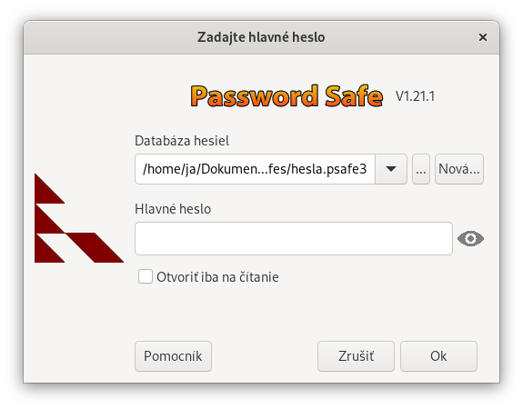

Password Safe umožňuje používateľom ukladať všetky heslá v jedinej databáze hesiel alebo vytvárať viacero databáz na rôzne účely (napr. jednu pre prácu, inú pre osobné použitie). Každá databáza je nezávislá a možno ju presúvať a používať na rôznych počítačoch, pokiaľ je nainštalovaná rovnaká verzia aplikácie Password Safe. Databázy sú šifrované šifrovacím kľúčom odvodeným z hlavného hesla (hlavné heslo sa však neuchováva v databáze v žiadnej forme).
Ak otvoríte aplikáciu Password Safe po prvýkrát, stlačte tlačidlo "Nová...". Budete požiadaní o názov a priečinok vašej databázy hesiel (predvolená hodnota je "pwsafe.psafe3"). Následne budete požiadaní o zadanie hlavného hesla, ktoré sa bude používať na šifrovanie a uzamknutie obsahu databázy.
Password Safe sa snaží zabezpečiť, aby boli informácie o vašich heslách správne uložené. Password Safe však nedokáže ochrániť váš pevný disk alebo počítač pred fyzickým poškodením alebo stratou. Preto dôrazne odporúčame, aby ste si pravidelne vytvárali kópie svojej databázy hesiel, napr. skopírovaním súboru na iný počítač alebo disk. Prípadne online pomocou cloudových služieb, ako napríklad DropBox, SugarSync alebo JungleDisk, aby sme vymenovali aspoň niektoré.
Ďalšia vec, ktorú by ste mali zvážiť, je zabezpečenie prístupu k vašej databáze hesiel pre príbuzných alebo spolupracovníkov. Password Safe nemá žiadne "zadné dvierka" alebo možnosť "obnovenie hesla" zámerne. To znamená, že ste zodpovední za sprístupnenie hlavného hesla iným osobám za vhodných okolností. Môže to byť niečo také jednoduché ako zapečatená obálka v zásuvke alebo bezpečnostnej schránke v banke, alebo prepracovanejší mechanizmus, ako napríklad rozdelenie hlavného hesla a poskytnutie jeho častí rôznym osobám.
Novú databázu je možné vytvoriť dvoma spôsobmi. Kliknutím na tlačidlo Nová... v dialógovom okne Zadajte hlavné heslo pri spustení programu alebo z položky menu "Súbor > Nová..." po otvorení aplikácie.
Ukazovateľ sily hesla pod poľom Hlavné heslo poskytuje približný údaj o sile hesla. Červená farba označuje slabé heslo, žltá stredne silné heslo a zelená silné heslo. Vaše hlavné heslo by malo byť silné, to znamená, že lišta by mala byť plná a zelená.
Password Safe môže fungovať so zariadením YubiKey a poskytovať "dvojfaktorovú autentifikáciu", teda chrániť vašu databázu niečím čo poznáte (vaše hlavné heslo), a niečím čo máte (zariadenie YubiKey). Ak nemáte zariadenie YubiKey, potom Password Safe nezobrazí tlačidlá a texty špecifické pre YubiKey a nižšie uvedené pokyny špecifické pre YubiKey sa na vás nevzťahujú.
Ak je váš YubiKey pripojený k počítaču, v oknách Zadajte hlavné heslo a Nastavenie hlavného hesla sa zobrazí tlačidlo "Yubikey" a textové pole, ako je znázornené vyššie. To vám umožní použiť váš YubiKey na prístup k vašej databáze Password Safe, buď spolu s hlavným heslom, alebo namiesto neho. Pre maximálnu bezpečnosť odporúčame, aby bola vaša databáza chránená súčasne YubiKey aj hlavným heslom.
Ak chcete použiť svoj nakonfigurovaný YubiKey na ochranu svojej databázy:
Ak chcete otvoriť databázu Password Safe chránenú vaším Yubikey:
Na bezpečné nastavenie hlavného hesla môžete použiť znaky s diakritikou (napr. na slovenskej klávesnici), ako napríklad ô, ň
alebo podobné. Na zadanie takýchto znakov môžete potrebovať inú fyzickú klávesnicu.
Takáto klávesnica je však k dispozícii ako virtuálna klávesnica. Táto klávesnica sa potom
používa na simuláciu všetkých dostupných cudzích znakov. Virtuálnu klávesnicu je možné zobraziť
kliknutím na symbol  . Cudzie znaky, ktoré nie sú dostupné na fyzickej klávesnici, je možné zadať týmto spôsobom.
Môžete si tak vytvoriť ešte bezpečnejšie hlavné heslo prípadne to použiť len na časť hlavného hesla.
. Cudzie znaky, ktoré nie sú dostupné na fyzickej klávesnici, je možné zadať týmto spôsobom.
Môžete si tak vytvoriť ešte bezpečnejšie hlavné heslo prípadne to použiť len na časť hlavného hesla.
Linux: funkčnosť závisí napr. na použitom Display Serveri ako je Wayland alebo X.Org (X11) a desktopovom prostredí ako je Gnome či KDE,
taktiež bude možno potrebné doinštalovať program na virtuálnu klávesnicu ako je "xvkbd".
macOS: podporu virtuálnej klávesnice je potrebné zapnúť v Nastaveniach systému > Prístupnosť, časť Klávesnica > Prehliadač.